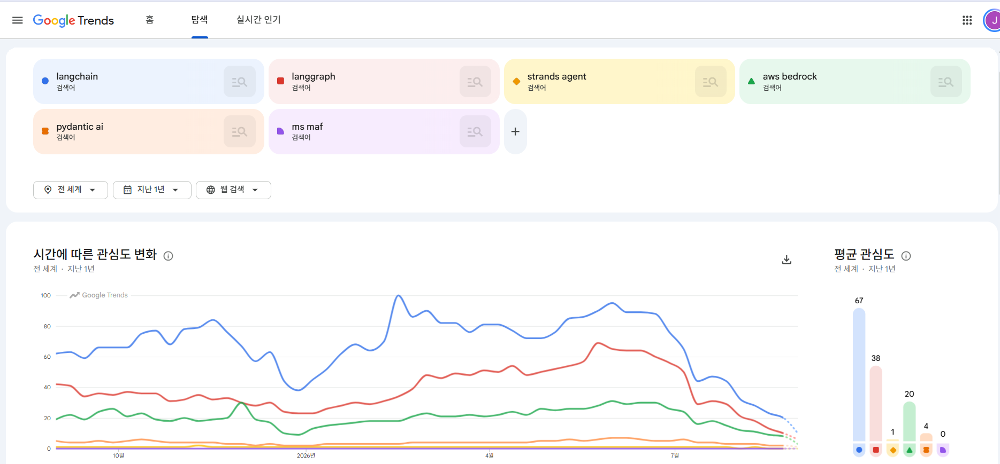

클라우드 3사 AI 에이전트 플랫폼 비교: Bedrock AgentCore, Microsoft Foundry, Gemini Enterprise Agent Platform
AWS, Azure, GCP가 각각 내놓은 오픈소스 에이전트 프레임워크와 관리형 실행 인프라를 같은 레이어끼리 표로 비교
이름 대응
세 클라우드 모두 오픈소스 프레임워크 하나와 관리형 런타임 하나를 쌍으로 내놓았고, 2026년 들어 제품명이 여러 번 바뀜. 이 글은 제목과 본문 모두 현재 공식 명칭을 쓰고, 검색에 익숙한 구 명칭은 아래 표에 함께 적음
| 구분 | AWS | Azure | GCP |
|---|---|---|---|
| 오픈소스 프레임워크 | Strands Agents | Microsoft Agent Framework(MAF) | Agent Development Kit(ADK) |
| 관리형 런타임 | Bedrock AgentCore Runtime | Microsoft Foundry Agent Service의 Hosted agents | Agent Runtime(구 Vertex AI Agent Engine) |
| 상위 플랫폼 | Amazon Bedrock AgentCore | Microsoft Foundry(구 Azure AI Foundry) | Gemini Enterprise Agent Platform(구 Vertex AI, 2026년 4월 22일 개명) |
| 최종 사용자용 에이전트 제품 | Amazon Quick Suite(2025년 10월. 서울 리전에는 서비스 엔드포인트만 열려 있고 에이전트 기능은 미지원) | Copilot Studio, Microsoft 365 Copilot | Gemini Enterprise 앱(2025년 10월, Agentspace 브랜드 통합) |
| 개발자 IDE 에이전트 | Kiro(Q Developer는 2027년 4월 지원 종료) | GitHub Copilot | Antigravity(Gemini CLI는 2026년 6월 Antigravity CLI로 통합, 개인 사용자 등급 제공 종료) |
| 이전 세대 에이전트 서비스 | Bedrock Agents Classic(2026년 7월 30일부터 신규 생성 불가) | Foundry Agents Classic(2027년 3월 31일 폐지) | Vertex AI Agent Builder(Gemini Enterprise Agent Platform으로 편입) |
프레임워크는 어느 클라우드에서든 동작하고, 런타임은 자기 클라우드에 종속됨. 예를 들어 MAF 에이전트를 AgentCore Runtime에 올리거나(AWS가 .NET용 호스팅 패키지를 공식 제공) LangGraph 에이전트를 세 런타임 어디에나 올릴 수 있음. 그래서 비교는 프레임워크끼리, 런타임끼리 따로 해야 함
오픈소스 프레임워크 비교
| 항목 | Strands Agents | Microsoft Agent Framework | Google ADK |
|---|---|---|---|
| 라이선스 | Apache 2.0 | MIT | Apache 2.0 |
| 언어와 최신 버전 | Python 1.54.0, TypeScript 1.15.0(2026년 8월 27일 동시 릴리스). 저장소를 strands agents 조직의 harness sdk 모노레포(Python과 TypeScript 통합)로 이전 | .NET 1.19.0, Python 1.16.0(2026년 8월 28일), Go는 2026년 7월 공개 프리뷰 | Python 2.8.0(1.x도 1.39.1로 유지), Go 2.2.0, Java 1.8.0, TypeScript 2.0.0, Kotlin 0.8.0 |
| 1.0과 주요 메이저 시점 | 2025년 7월 15일(공개는 2025년 5월) | 2026년 4월 3일 | Python 2025년 5월 20일, 2.0은 2026년 5월 19일 |
| 출신 | AWS 내부 에이전트 개발에 쓰던 SDK | Semantic Kernel과 AutoGen을 합친 후속작. 둘은 유지보수 모드 | Google이 자사 에이전트 제품에 쓰던 프레임워크 |
| 실행 모델 | 모델 주도 루프. 모델이 도구 선택과 종료 결정 | Agent(루프) + Workflow(그래프, 슈퍼스텝 체크포인트) 두 갈래 | 2.0(Python, Go)부터 그래프 엔진 중심. graph based, dynamic, collaborative 세 가지 워크플로우 유형 추가. Sequential, Parallel, Loop 템플릿 워크플로우는 권장 대상에서 제외(클래스와 문서는 유지) |
| 멀티 에이전트 | Agents as Tools(에이전트를 도구로), Handoffs(위임), Swarm(자율 협업), Graph(그래프), Workflow(정해진 순서) | sequential(순차), concurrent(병렬), handoff(위임), group chat(그룹 대화), Magentic One(계획형 관리자). 1.0에서 모두 안정 | 코디네이터가 하위 에이전트에 위임(transfer), 그래프 워크플로우 |
| 상태와 세션 | SessionManager는 File, S3, AgentCore Memory 세 종류. ConversationManager(대화 관리자)는 슬라이딩 윈도우와 요약 두 방식 | AgentSession, 컨텍스트 프로바이더(메모리), Workflow 체크포인트 저장소 InMemory, File, Cosmos | SessionService는 인메모리, 데이터베이스(SQLite 포함), Vertex AI 세 종류. MemoryService는 Memory Bank, RAG |
| 크래시 후 재개 | 세션 복원. 내구성 실행 엔진 없음 | Workflow 체크포인트 ID로 재개. Durable Task Scheduler 확장을 붙이면 상태 변화마다 체크포인트, 대기 중 비용 0 | ResumabilityConfig(Python 1.16+)로 Invocation ID 기준 재개. 재개 시 도구가 중복 실행될 수 있음 |
| 사람 개입(HITL) | Interrupts(hook 또는 도구에서 발생) | 승인 흐름이 모든 오케스트레이션 패턴에 내장. 일시정지와 재개 | Tool Confirmation(Python 1.14+, 실험 단계). 확인 응답 형식은 불리언 또는 구조화된 객체 |
| MCP | 기본 지원(first class). 공식 Strands MCP 서버 별도 제공 | 지원. hosted MCP 도구 | 양방향. 외부 MCP 서버를 도구로 쓰는 것과 ADK 도구를 MCP로 노출하는 것 모두 가능(FastMCP) |
| A2A | 서버와 클라이언트 양방향(Python, TypeScript). Swarm 안에서는 미지원 | 프로토콜 v1은 지원하나 구현 패키지는 프리뷰(공식 블로그 명시) | 서버와 클라이언트(Python, Go, Java). 실험 단계 표기 |
| 모델 제공자 | Bedrock 기본. Nova, Anthropic, Gemini, OpenAI, LiteLLM, Mistral, Ollama, SageMaker 등. 커뮤니티 제공자로 CLOVA Studio, vLLM, SGLang, NVIDIA NIM | Foundry, Azure OpenAI, OpenAI, Anthropic, Bedrock, Gemini, Ollama | Gemini, Claude, Model Garden 직접. LiteLlm, ApigeeLlm, Ollama, vLLM 커넥터. 모델 라우팅과 자동 페일오버 |
| 관측성 | OpenTelemetry 내장 | OpenTelemetry 네이티브 | OpenTelemetry GenAI 시맨틱 컨벤션, Cloud Trace |
| 평가 | 프레임워크 내장 없음. 별도 서비스(AgentCore Evaluations) 사용 | Foundry 평가 대시보드 연동 | 내장 평가(실행 궤적(trajectory)과 최종 응답, Python) |
| 특기 사항 | AgentCore Harness(AWS 관리형 설정형 도구)에서 만든 에이전트를 Strands 코드로 내보낼 수 있음 | Build 2026(2026년 6월)에서 MAF 내장 Agent Harness 발표(AWS의 AgentCore Harness와는 별개). CodeAct(Hyperlight microVM에서 Python 실행)는 프리뷰 | 모델 컨텍스트 캐싱, 컨텍스트 압축, Skills(실험 단계) |
| 배포 대상 | AgentCore, Lambda, Fargate, App Runner, EKS, EC2, Docker | Foundry Hosted agents, Container Apps, AKS, Functions, 임의의 런타임 | Agent Runtime, Cloud Run, GKE, 임의의 컨테이너 |
세 프레임워크 모두 타 클라우드의 모델과 런타임을 지원한다고 문서에 명시. 종속은 프레임워크가 아니라 아래 런타임 레이어에서 생김
관리형 런타임 비교
| 항목 | AgentCore Runtime | Foundry Hosted agents | Agent Runtime |
|---|---|---|---|
| GA | 2025년 10월 13일(9개 리전, 서울은 이후 추가) | 차세대 Foundry Agent Service는 2026년 3월 16일 GA(이 시점 Hosted agents는 프리뷰). Build 2026에서 30일 내 GA를 예고했고 Hosted agents는 2026년 7월 초 GA | Agent Runtime GA 2026년 4월 22일(동시에 개명, 7일 장기 실행과 BYOC(bring your own container) 추가) |
| 격리 단위 | 세션당 전용 microVM. 종료 시 메모리 삭제 | 세션당 VM 격리 샌드박스. 홈 디렉터리는 세션 사이에도 유지 | 컨테이너 기반. 세션 구분은 호출자가 넘긴 세션 ID 기준 |
| 세션 수명 | 최대 8시간. 유휴 15분이면 정지되고 다시 호출하면 새 컴퓨트에서 시작. Runtime Instances는 14일 | 유휴 5~60분(기본 15분) 후 scale to zero, 상태 보존 재개. 30일 미사용 시 삭제. 총 실행 시간 한도는 문서에 없음 | 장기 실행 작업 최대 7일(콜드 스타트는 1초 미만) |
| 프레임워크 무관 | 예. Runtime 문서에 예시로 나열된 프레임워크는 Strands, LangGraph, CrewAI, LlamaIndex, Google ADK, OpenAI Agents SDK(문서에 따라 Claude Agent SDK도 포함). 그 외 커스텀 컨테이너 | 예. MAF, LangGraph, OpenAI Agents SDK, Claude Agent SDK(문서 표기는 Anthropic Agent SDK), GitHub Copilot SDK, Semantic Kernel, 커스텀(Python, C#) | 예. ADK, LangChain, LangGraph, LlamaIndex, AG2, A2A 에이전트, 커스텀 컨테이너 |
| 선언형 대안 | AgentCore Harness(2026년 6월 GA, 설정형) | Prompt agents(지시문 + 모델 + 도구, 인프라 없음) | Agent Studio(Gemini Enterprise 앱 쪽은 Agent Designer) |
| 프로토콜 | HTTP, MCP, A2A, AG UI 네 가지를 네이티브 지원 | Responses, Invocations(JSON, WebSocket), Activity(Teams), A2A(프리뷰) | Agent Registry가 A2A v1.0과 0.3 지원, 원격 MCP 서버 GA |
| 컴퓨트 요금 | vCPU 시간당 $0.0895 + GB 시간당 $0.00945, 초 단위, 유휴와 I/O 대기 무료 | Korea Central 기준 vCPU 시간당 $0.109 + GiB 시간당 $0.013(East US $0.099 + $0.012) | vCPU 시간당 $0.085 + GiB 시간당 $0.009, 턴 사이 유휴 무과금. 월 50 vCPU 시간과 100 GiB 시간 무료 |
| 서울 리전 | Runtime microVM 지원. Runtime Instances 미지원 | Korea Central 지원(Hosted agents 포함) | asia northeast3 지원. Sessions와 Memory Bank 지원, Agent Gateway와 Code Execution 미지원 |
| 프라이빗 네트워크 | VPC 배치(2025년 9월), PrivateLink 컨트롤 플레인(2026년 3월), VPC egress(2026년 4월) | 에이전트 지원 리전 전반(Korea Central 포함)에서 프라이빗 VNet과 Class A 사설 대역(10.x) 지원. Hosted agents는 BYO VNet, 공용 인터넷으로 나가는 egress 경로 없음(egress 제어 기능은 프리뷰) | Private Service Connect 인터페이스. Agent Gateway로 통제된 egress |
| 배포 단위 | 컨테이너 이미지 또는 코드 | 컨테이너 이미지 또는 zip(Foundry가 빌드). 배포 버전은 불변이고 버전 사이 트래픽 분할은 불가 | 컨테이너(BYOC) 또는 코드 |
세 런타임의 컴퓨트 단가는 vCPU 시간당 $0.085에서 $0.109 사이로 편차가 작음. 차이는 단가보다 세션 수명(AWS 8시간, GCP 7일, Azure는 총 한도 없이 유휴 타임아웃만 적용), 무료 구간(GCP만 월 무료 할당), 서울에서 빠진 구성 요소에서 생김. 요금표 단위는 AWS가 GB, Azure와 GCP가 GiB 기준
구성 요소 대응표
AgentCore 구성 요소를 기준으로 Azure와 GCP의 대응 제품과 상태를 정리. GA와 프리뷰 여부는 2026년 8월 말 기준
| 구성 요소 | AWS AgentCore | Microsoft Foundry | GCP Agent Platform(Gemini Enterprise Agent Platform) |
|---|---|---|---|
| 런타임 | Runtime microVM GA. Runtime Instances(EC2 기반, GPU 가능) 2026년 8월 6일 GA | Hosted agents GA | Agent Runtime GA |
| 메모리 | Memory GA. 단기 이벤트 저장과, 추출 전략(strategy)을 설정해 쌓는 장기 메모리 | Memory 공개 프리뷰(사용자, 세션, 절차 메모리 세 종류) | Memory Bank GA. 글로벌과 멀티리전 엔드포인트 2026년 6월 17일, 메모리 프로필 2026년 7월 15일 |
| 도구 게이트웨이 | Gateway GA. REST, OpenAPI, Lambda를 MCP 도구로 변환. 외부 MCP 서버와 A2A 에이전트는 변환 없이 그대로 연결(패스스루) | Toolbox GA. 도구를 한 번 등록해 관리형 MCP 엔드포인트로 노출. 도구 검색과 Skills 프리뷰 | Agent Gateway GA(2026년 6월 18일). 사용자, 에이전트, 도구 사이에서 정책을 적용하는 지점. 별도로 Apigee, MCP Toolbox for Databases |
| 아이덴티티 | Identity GA. 워크로드 아이덴티티, 토큰 볼트, OBO(on behalf of) 토큰 교환(2026년 4월) | Entra Agent ID GA. 배포 시 에이전트별 Entra 아이덴티티 자동 생성. Agent 365 레지스트리(2026년 5월 GA, 사용자당 월 $15) | Agent Identity GA(2026년 4월 22일). 에이전트 자신 또는 사용자를 대신해 인증 |
| 정책과 가드레일 | Policy GA(2026년 3월 3일). 자연어로 쓴 정책을 Cedar(AWS 정책 언어)로 컴파일해 Gateway에서 도구 호출 차단. Guardrails 결합(2026년 6월), 시간 기반 정책(2026년 8월). AI 트래픽 속도 제한은 Gateway 쪽 기능. Bedrock Guardrails는 모델과 독립된 ApplyGuardrail API | Foundry Guardrails GA(Content Safety, Prompt Shields). 에이전트 가드레일과 도구 호출 단계에서 차단하거나 승인받는 기능은 프리뷰 | Model Armor GA(Gateway 결합 2026년 6월). Semantic Governance Policies 공개 프리뷰. IAM 거버넌스 정책 비공개 프리뷰 |
| 평가 | Evaluations GA(2026년 3월 31일). 내장 평가자 13종. 상시 온라인 평가와 필요할 때 돌리는 온디맨드 평가. Optimization의 A/B 테스트(Gateway 트래픽 분할), 추천, 배치 평가는 2026년 6월 GA | Foundry evaluations GA(2026년 3월 16일). 지속 평가, Agent optimizer 프리뷰 | Gen AI evals(기능별 GA와 프리뷰 혼재). 오프라인 평가, 온라인 모니터, 시뮬레이션, 실패 군집화 |
| 관측성 | Observability GA. CloudWatch 기반 | Application Insights 자동 주입, OpenTelemetry(OTel), 에이전트 추적과 대시보드 GA | Agent Observability GA(2026년 6월 18일). 같은 날 이후 Agent Runtime에 새로 배포하는 ADK 에이전트는 OTel 기본 활성 |
| 레지스트리 | AWS Agent Registry 프리뷰(서울 미지원) | Agent 365와 Entra Agent ID | Agent Registry GA(2026년 6월 18일). 에이전트, 도구, MCP 서버 카탈로그 |
| 내장 도구 | Browser, Code Interpreter GA(Runtime과 같은 요금). Web Search Tool(서울 미지원) | Code Interpreter GA, Browser Automation Tool 프리뷰, Web Search, Bing grounding, Computer Use(Korea Central 미지원) | Code Execution(미국 중부 us central1 리전만), Computer Use(2026년 5월), Google Search grounding |
| 결제 | Payments 프리뷰(x402, MPP 등 에이전트 결제 프로토콜 지원). 서울 미지원 | 해당 없음 | AP2 프로토콜 주도. 플랫폼 내장 결제 기능은 없음 |
서울 리전 요약
| 구성 요소 | AWS 서울 | Azure Korea Central | GCP asia northeast3 |
|---|---|---|---|
| 런타임 | 지원(microVM). Runtime Instances 미지원 | 지원(Hosted agents 포함) | 지원 |
| 메모리 | 지원 | 지원(공개 프리뷰. Korea Central 요금 미터 존재 확인) | 지원 |
| 도구 게이트웨이 | 지원 | 지원 | 미지원 |
| 아이덴티티 | 지원 | 테넌트 범위(리전 무관) | 리전별 지원 표 미제공 |
| 정책과 가드레일 | 지원 | 리전 제한 명시 없음(에이전트 가드레일은 프리뷰) | Model Armor 리전 목록에는 포함. 단 Gateway 미지원이라 게이트웨이 결합 집행은 불가 |
| 평가 | 지원 | 리전 제한 명시 없음 | 리전별 지원 표 미제공 |
| 관측성 | 지원 | 지원 | 리전별 지원 표 미제공 |
| 레지스트리 | 미지원 | 테넌트 범위(Agent 365) | 리전별 지원 표 미제공 |
| 내장 도구 | Browser, Code Interpreter 지원. Web Search Tool 미지원 | Code Interpreter 지원, Browser Automation 지원(프리뷰). Computer Use 미지원 | Code Execution은 미국 중부 리전만. Computer Use는 리전별 지원 미확인 |
| 결제 | 미지원 | 해당 없음 | 해당 없음 |
세 클라우드 모두 핵심 런타임과 메모리는 서울에 있고, 2026년에 추가된 신규 기능이 먼저 빠짐. 서울 미지원 목록은 AWS가 Runtime Instances, Payments, Agent Registry, Web Search Tool, Azure가 Computer Use, GCP가 Agent Gateway와 Code Execution. 도구 게이트웨이 자체는 AWS와 Azure 모두 서울에서 GA이지만, 게이트웨이에서 정책을 집행하는 기능은 AWS만 GA이고 Azure는 프리뷰, GCP는 Gateway가 없어 불가
모델 카탈로그, 서울 관점
| 항목 | AWS Bedrock | Microsoft Foundry | GCP Model Garden |
|---|---|---|---|
| 자사 모델 | Amazon Nova 2 계열(Lite, Sonic 등) | MAI 계열(MAI Thinking 1, MAI Image 2.5, MAI Voice, MAI Transcribe)과 Phi. 실사용 주력은 Azure OpenAI in Microsoft Foundry models의 GPT 5.x | Gemini 3.x 계열, Gemini Embedding 2 |
| Claude | Opus 5, Sonnet 5, Fable 5, Sonnet 4.6 | 2026년 6월 GA. Azure 호스팅 기준 Opus 5, Opus 4.8, Sonnet 5, Haiku 4.5(Anthropic 인프라에 호스팅된 모델을 Foundry에서 호출하는 경로로는 Fable 5 등이 추가됨) | Sonnet 5, Opus 5, Fable 5, Opus 4.8 등 |
| 오픈 모델 | Llama, Mistral, DeepSeek, gpt oss(서울 여부 미확인) | Llama 3.3과 4, Mistral, DeepSeek V3.x와 R1, Grok 4, gpt oss | Llama 4, Mistral Medium 3, Grok 4.20, gpt oss, Qwen3, GLM |
| 서울에서의 접근 방식 | 리전 내 온디맨드 목록에 현행 모델 없음. Nova는 APAC 지역 단위 교차 리전 추론, Claude는 글로벌 교차 리전 추론 프로필로 접근 | GPT 5.x는 글로벌 배포(global deployment) 방식의 과금 미터가 Korea Central에 등록돼 있음. Claude 배포 리전은 미국 여러 리전과 Sweden Central뿐이라 Korea Central 불가. 한국에서 계약한 Enterprise 구독은 Claude 모델 사용 지원 대상에서 제외된다고 문서에 명시 | 서울 리전 엔드포인트로 직접 호출되는 Gemini는 2.5 Flash 등 일부. 3.5, 3.6, 3.7 Flash는 서울 미지원이라 글로벌 또는 us 엔드포인트 사용. Claude 등 파트너 모델도 모델별 리전 표 확인 필요 |
서울에서 프론티어 모델을 쓸 때의 전제는 3사가 다름
- AWS는 교차 리전 또는 글로벌 추론 프로필 사용이 전제라 데이터 상주 요건 검토 필요
- Azure는 Claude처럼 Korea Central에 아예 배포할 수 없는 모델이 있음
- GCP는 Gemini 2.5 Flash 등 일부만 서울 리전 내 호출이 되고 최신 Gemini와 파트너 모델은 글로벌 엔드포인트 또는 별도 확인 필요
리전 내 추론이 필수인 워크로드는 모델 선택지가 크게 줄어듦
프로토콜
| 프로토콜 | 역할 | 현황 | 3사 지원 |
|---|---|---|---|
| MCP | 에이전트와 도구, 데이터 연결 | 사실상 표준 | AWS AgentCore Gateway가 MCP 허브, awslabs mcp 저장소에 서버 62개. Azure Toolbox가 관리형 MCP 엔드포인트. GCP 원격 MCP 서버 GA와 MCP Toolbox for Databases |
| A2A | 에이전트와 에이전트 연결 | Linux Foundation 산하 표준. v1.0은 2026년 3월 12일, 150개 이상 조직 참여 | AWS AgentCore Runtime 네이티브(포트 9000, Agent Card). Microsoft Foundry와 Copilot Studio 통합(Hosted agents는 프리뷰). GCP Agent Registry가 v1.0 지원 |
| AG UI | 에이전트와 프론트엔드 연결 | CopilotKit 파트너십에서 출발한 오픈 프로토콜(ag ui protocol 조직이 관리) | AWS AgentCore Runtime 네이티브(2026년 3월). Azure와 GCP는 런타임이 아니라 프레임워크 레이어에서 대응 |
| AP2 | 에이전트 결제 | Google이 2025년 9월 공개(당시 파트너 60여 곳), 2026년 4월 29일 FIDO Alliance에 기부 | Google이 사양 주도. AWS는 AP2가 아니라 x402와 MPP를 AgentCore Payments에서 지원, Azure는 해당 없음 |
A2A 연혁. Google이 2025년 4월 9일 공개하고 2025년 6월 23일 Linux Foundation에 기부(창립 멤버는 AWS, Cisco, Google, Microsoft, Salesforce, SAP, ServiceNow). MCP와 A2A는 경쟁이 아니라 보완 관계. MCP는 3사 공통 GA이고 A2A도 AWS와 GCP는 GA, Azure만 프리뷰라 프로토콜 지원 여부로는 차이가 거의 없음
검색 관심도

2026년 8월 기준 최근 12개월 전 세계 웹 검색. 최고값을 100으로 놓는 상대 지수의 평균값. 검색어별로 langchain 67, langgraph 38, aws bedrock 20, pydantic ai 4, strands agent 1, ms maf 0
- 프레임워크 검색은 여전히 LangChain과 LangGraph에 집중. 클라우드 벤더 프레임워크는 아직 초기 단계
- 읽을 때 주의할 점
- "ms maf"는 실제 검색어로 쓰이지 않는 약어라 0에 가깝게 나옴
- "aws bedrock"은 프레임워크가 아니라 서비스명이라 다른 항목과 성격이 다름
- Google ADK는 "adk"가 여러 뜻으로 쓰여 검색어 중의성이 커 비교에서 제외
- 검색어 목록에 "ai agent"를 넣어 다시 그리면 지수가 재조정되어 ai agent 평균 53, langchain 12, langgraph 7 수준. 검색어 목록이 다르면 지수 기준이 달라지므로 두 그래프의 값을 직접 비교할 수 없음. 제품명보다 개념어 검색량이 훨씬 큰 단계라는 뜻
선택 기준
| 상황 | 추천 | 이유 |
|---|---|---|
| 이미 AWS를 주력으로 쓰고 있고 서울에서 게이트웨이 정책까지 필요 | Strands 또는 선호 프레임워크와 AgentCore 조합 | 서울에 Runtime, Memory, Gateway, Policy, Evaluations 모두 있음. HTTP, MCP, A2A, AG UI 네 가지 프로토콜 네이티브 |
| Microsoft 365, Teams, Entra 중심 조직 | MAF와 Foundry Hosted agents | Entra Agent ID 자동 발급, Teams와 Copilot 채널 게시, Agent 365 레지스트리 |
| 프레임워크 안에서 내구성 실행이 필요 | MAF와 Durable Task Scheduler | 상태 변화마다 체크포인트, 대기 비용 0. 세 프레임워크 중 자사 내구성 실행 엔진을 함께 제공하는 곳은 MAF뿐 |
| Gemini 중심, 무료 구간으로 시작 | ADK와 Agent Runtime | 월 50 vCPU 시간 무료, 7일 장기 실행, 1초 미만 콜드 스타트. 단 서울에서 Gateway와 Code Execution 없음 |
| 멀티 클라우드 또는 종속 회피 | LangGraph처럼 3사 런타임이 모두 명시 지원하는 프레임워크와 각 런타임 | 세 런타임 모두 프레임워크 무관. 런타임 계약(진입점, 프로토콜, 패키징)만 맞추면 이식 가능 |
| 리전 내 모델 추론이 규제상 필수 | 3사 공통으로 요건 재검토 필요 | AWS는 교차 리전 추론이 전제, Azure는 모델에 따라 Korea Central 배포 불가, GCP는 Gemini 2.5 Flash 등 일부만 서울 리전 내 호출 가능 |
| 코드 작성 없이 선언형으로 시작 | AgentCore Harness, Foundry Prompt agents, Agent Studio | 세 곳 모두 선언형 경로 제공. 커스텀 오케스트레이션이 필요해지면 코드 배포로 전환 |
결론
- 3사 구도는 같음. 오픈소스 프레임워크(Strands, MAF, ADK) + 프레임워크 무관 관리형 런타임(AgentCore, Foundry Hosted agents, Agent Runtime). 종속은 런타임과 그 부속 관리형 서비스 레이어에서 생김
- 프레임워크 차이는 실행 모델. Strands는 모델 주도 루프, MAF는 루프와 그래프 두 갈래에 자사 내구성 실행 엔진을 결합, ADK는 2.0부터 그래프 엔진
- 런타임 컴퓨트 단가는 vCPU 시간당 0.085~0.109로 비슷. 세션 수명(AWS 8시간, Azure 유휴 기준, GCP 7일), 무료 구간, 서울 지원 범위가 실질적 차이
- 서울에는 3사 모두 런타임과 메모리가 있고 2026년 신규 기능이 빠짐. AWS는 Runtime Instances, Payments, Agent Registry, Web Search Tool. Azure는 Computer Use. GCP는 Gateway, Code Execution
- 프론티어 모델은 AWS는 서울에서 교차 리전 추론 전제, Azure는 모델에 따라 Korea Central 배포 불가, GCP는 Gemini 2.5 Flash 등 일부만 서울 리전 내 호출 가능. 데이터 상주 요건이 있으면 모델 선택을 먼저 확정해야 함
- MCP는 3사 공통 GA, A2A는 Azure만 프리뷰. 프로토콜은 더 이상 주요 선택 기준이 아님
- 검색 관심은 여전히 LangChain과 LangGraph에 있음
출처
- AWS: AgentCore 리전, 릴리스 노트, Runtime 세션, Runtime 서비스 계약, 요금, GA 공지, Policy GA, Evaluations GA, Harness GA, Bedrock 모델 리전 호환, AgentCore Runtime 프레임워크, .NET 에이전트를 AgentCore에 배포, Quick Suite 리전, Strands 저장소, Strands 배포 가이드, Strands A2A, Quick Suite 공지, Q Developer 지원 종료, awslabs mcp
- Azure: MAF 1.0 발표, MAF 개요, MAF Build 2026, Durable agents, Foundry Agent Service GA, Agent Service 개요, Hosted agents, 한도와 리전, Toolbox, Guardrails, Claude in Foundry, Durable Task Scheduler 과금, Agent 요금, Copilot Studio vs Foundry
- GCP: Vertex AI 명칭 변경, Agent Platform 릴리스 노트, 에이전트 리전, 요금, Agent Platform 소개, ADK 2.0, ADK 릴리스 노트, ADK 재개, ADK Tool Confirmation, ADK A2A, ADK 배포, Model Armor 리전, 모델 리전, Gemini Enterprise
- 프로토콜: A2A Linux Foundation 기부, A2A 150개 조직, A2A 릴리스, AG UI, AP2 FIDO Alliance 기부, Foundry Claude GA(2026년 6월 소식)